Сегменти текстових вкладок (Text Fusen Segments) використовуються у форматі TAD для керування форматуванням, атрибутами символів, версткою сторінок та стилями тексту. Усі сегменти текстових вкладок поділяються на системні (ідентифікатори підтипів 0–127) та розширення додатків (ідентифікатори 128–255).
| Сегмент текстової вкладки | ID | |
|---|---|---|
| Сегмент сторінки тексту (Text Page Fusen) | TS_TPAGE | (0xA0) |
| Сегмент лінійки тексту / абзацу (Text Ruler Fusen) | TS_TRULER | (0xA1) |
| Сегмент шрифту тексту (Text Font Fusen) | TS_TFONT | (0xA2) |
| Сегмент атрибутів символів (Text Character Fusen) | TS_TCHAR | (0xA3) |
| Сегмент атрибутів тексту (Text Attribute Fusen) | TS_TATTR | (0xA4) |
| Сегмент стилю тексту (Text Style Fusen) | TS_TSTYLE | (0xA5) |
| (Зарезервовано) | ------ | (0xA6〜0xAC) |
| Змінна тексту (Text Variable Fusen) | TS_TVAR | (0xAD) |
| Замітка тексту (Text Memo Fusen) | TS_TMEMO | (0xAE) |
| Сегмент текстової вкладки додатка (Application Text Fusen) | TS_TAPPL | (0xAF) |
Сегмент текстової вкладки визначає свій підтип у полі SUBID. Додаток, який зустрічає незнайомий сегмент вкладки, може безпечно пропустити його без порушення обробки решти текстового документа.
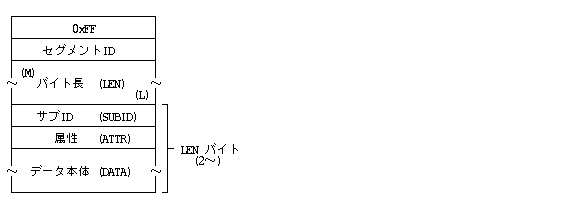
Вкладки форматування застосовуються послідовно в порядку їх появи у тексті. Вони впливають на наступні текстові символи до появи нової вкладки того самого типу.
Сегмент TS_TPAGE визначає параметри сторінки, такі як розмір паперу, орієнтація, поля сторінки, багатоколонкова верстка та колонтитули.
Визначає фізичний розмір сторінки, орієнтацію паперу та поля.
LEN : 14
SUBID: 0
ATTR : UB attr -- Орієнтація та напрямок верстки (attr)
DATA : UH length -- Довжина (висота) сторінки
UH width -- Ширина сторінки
UH top -- Верхнє поле
UH bottom -- Нижнє поле
UH left -- Ліве поле
UH right -- Праве поле
Параметри прямокутника сторінки та полів визначають область верстки тексту. При роздрукуванні або відображенні сторінка форматується згідно з вказаними межами.
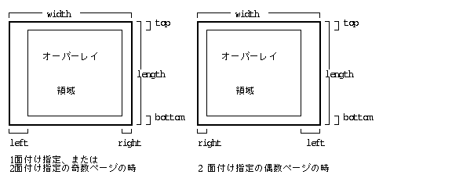
Змінює значення верхнього, нижнього, лівого та правого полів для наступних сторінок.
LEN : 10
SUBID: 1
ATTR : UB - -- (Зарезервовано)
DATA : UH top -- Верхнє поле
UH bottom -- Нижнє поле
UH left -- Ліве поле
UH right -- Праве поле
Якщо для якогось із полів вказано значення 0xFFFF, поточний розмір цього поля залишається без змін.
Визначає багатоколонкову верстку тексту (кількість колонок та проміжки між ними).
LEN : 4, 6
SUBID: 2
ATTR : UB column -- Кількість колонок та режим (column)
DATA : UH colsp -- Міжколонковий інтервал
[ UH colline -- Стиль розділювальної лінії ]
DIWW KKKK
При використанні багатоколонкової верстки код розриву колонки (символ керування 0x0B) примусово переносить обробку наступного тексту у верхню частину наступної колонки. Наприклад, для 3-колонкового макета (column = 3) символ 0x0B виконує послідовний перехід між колонками на поточній сторінці.
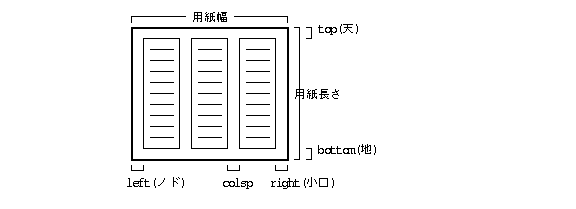
Якщо сторінка завершується або вставляється розрив сторінки, система може автоматично вирівнювати висоту тексту в усіх колонках (балансування колонок), щоб вони мали однакову довжину.
Зміна кількості колонок (наприклад, з 1 на 2 колонки або навпаки) допускається в будь-якому місці сторінки. Нижче наведено приклади зміни кількості колонок на одній сторінці:
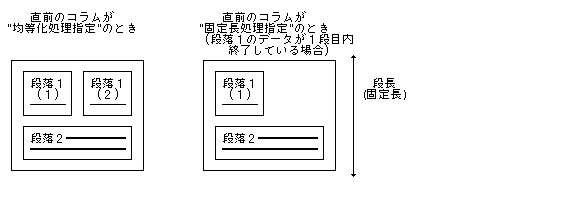
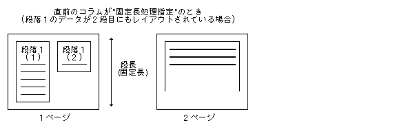
Визначає верхні та нижні колонтитули сторінки (до 16 різних типів колонтитулів). Дозволяє задавати вирівнювання (по центру, зліва, справа), номери сторінок, поточну дату та верхній/нижній розмежувальний кант.
LEN : Змінна SUBID: 3 ATTR : UB attr -- Тип колонтитула (верхній/нижній, парна/непарна сторінка) DATA : UB data[] -- Дані або текстовий рядок колонтитула

Визначає фонові бланки, сітки або зображення водяних знаків, які накладаються на сторінку під текстом.
LEN : 4 SUBID: 4 ATTR : UB - -- (Зарезервовано) DATA : UH overlay -- Бітова маска вибору фонового бланка

Обмежує область верстки тексту заданим прямокутником area у межах сторінки.
LEN : 10 SUBID: 5 ATTR : UB attr -- Атрибути області / фрейму DATA : RECT area -- Прямокутні координати області
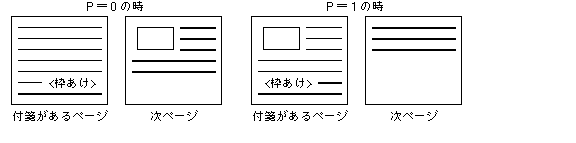
Задає початковий номер сторінки, крок нумерації та формат відображення номера сторінки.
LEN : 4 SUBID: 6 ATTR : B step -- Крок зміни номера сторінки (+1, -1) DATA : UH num -- Початковий номер сторінки
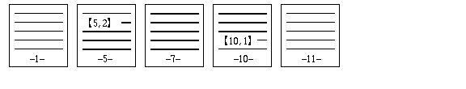
Визначає умовний розрив сторінки або колонки, якщо на поточній сторінці залишається менше вказаного місця remain.
LEN : 2, 4 SUBID: 7 ATTR : UB cond -- Умова розриву (0=завжди розрив колонки, 1=завжди розрив сторінки, 2=умовний) DATA :[ SCALE remain -- Мінімальне залишкове місце на сторінці ]
Забороняє розрив сторінки або колонки всередині позначеного текстового блоку (запобігає висячим рядкам).
LEN : 2 SUBID: 8 ATTR : UB - -- (Зарезервовано)

Сегмент лінійки TS_TRULER регулює міжрядковий інтервал, вирівнювання тексту у межах абзацу, ліві та праві поля, абзацні відступи, поля табуляції та сітки колонок.

Задає висоту та інтервал між сусідніми рядками тексту.
LEN : 4 SUBID: 0 ATTR : UB attr -- Прапорці режиму інтервалу (attr) DATA : SCALE pitch -- Значення міжрядкового інтервалу
SCALE.

Задає режим горизонтального вирівнювання тексту в абзаці.
LEN : 2 SUBID: 1 ATTR : UB align -- Режим вирівнювання
align:
0: Вирівнювання по лівому краю (Left)
1: Вирівнювання по центру (Center)
2: Вирівнювання по правому краю (Right)
3: Вирівнювання по ширині (Justify)
4: Вирівнювання за десятковим розділювачем (Decimal Align)

Визначає ліве та праве поля абзацу, абзацний відступ першого рядка (Indent) та позиції табуляції.
LEN : Змінна
SUBID: 2
ATTR : UB attr -- Прапорці режиму відступів (Rxxx xxPP)
DATA : SCALE height -- Висота базового рядка
SCALE pargap -- Інтервал між абзацами
H left -- Ліве поле абзацу
H right -- Праве поле абзацу
H indent -- Абзацний відступ першого рядка (Indent)
H ntabs -- Кількість позицій табуляції
UH tabs[] -- Масив позицій табуляції (ntabs елементів)

Повна специфікація лінійки абзацу, яка задає висоту рядків, міжабзацний проміжок, межі полів, абзацний відступ, а також налаштування окремих полів/колонок та ліній сітки табуляції.
LEN : Змінна
SUBID: 3
ATTR : UB attr -- Атрибути лінійки (Rxxx xxPP)
DATA : SCALE height -- Висота базового рядка
SCALE pargap -- Інтервал між абзацами
UH line -- Формат та стиль лінії сітки (line)
H nfld -- Кількість полів/колонок табуляції (nfld)
[ -- Масив специфікацій полів (nfld елементів) --
UH left -- Ліве поле поля/колонки
UH right -- Праве поле поля/колонки
UH margin -- Абзацний відступ першого рядка / вирівнювання
UH f_attr -- Атрибути поля (HxWW KKKK xxxx xAAA)
]
SCALE.
SCALE.
nfld > 0: вказує точну кількість полів/колонок у масиві.
nfld = -1..-3: задає заздалегідь визначений табличний формат сітки (значення height, pargap, line береться з пресету).
margin значення:
Вирівнювання по лівому краю -- Використовує значення margin як абзацний відступ (Indent)
Вирівнювання по центру -- Ігнорується (центричний відступ)
Вирівнювання по правому краю -- Ігнорується
Вирівнювання по ширині (Justify)-- Використовує margin як відступ


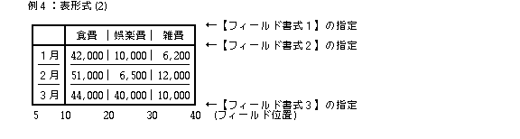
Задає напрямок верстки символів та рядків у документі.
LEN : 2 SUBID: 4 ATTR : UB txdir -- Напрямок написання тексту
txdir:
0 : Горизонтальний напрямок (ліворуч-праворуч →)
1 : Вертикальний напрямок (згори-вниз ↓)
2 : Реверсивний горизонтальний напрямок (праворуч-ліворуч ←)

Примусово виконує розрив поточної колонки або сторінки у місці розташування вкладки.
LEN : 2 SUBID: 5 ATTR : UB - -- (Зарезервовано)
Сегмент TS_TFONT визначає гарнітуру, накреслення, розмір, пропорції, міжсимвольний інтервал та колір текстових символів.
Задає кодову класифікацію та назву гарнітури шрифту.
LEN : 4〜
SUBID: 0
ATTR : UB - -- (Зарезервовано)
DATA : UH class -- Клас гарнітури шрифту (Font Class)
[UB name[]] -- Назва шрифту (символьний рядок)

Задає товщину (накреслення), нахил (курсив) та стильові модифікації шрифту.
LEN : 4 SUBID: 1 ATTR : UB - -- (Зарезервовано) DATA : UH attr -- Бітова маска стилю шрифту

Задає кегль (розмір) символів шрифту.
LEN : 4 SUBID: 2 ATTR : UB - -- (Зарезервовано) DATA : CHSIZE size -- Розмір шрифту у типах CHSIZE
Змінює горизонтальний та вертикальний масштаб (пропорції) символів шрифту.
LEN : 6
SUBID: 3
ATTR : UB - -- (Зарезервовано)
DATA : RATIO h_ratio -- Вертикальний масштаб шрифту (RATIO)
RATIO w_ratio -- Горизонтальний масштаб шрифту (RATIO)
Регулює відстань (крок/трекінг) між сусідніми символами.
LEN : 4 SUBID: 4 ATTR : UB attr -- Прапорці інтервалу (DSxx xxxG) DATA : SCALE pitch -- Крок міжсимвольного інтервалу

Задає кут обертання окремих символів відносно базової лінії.
LEN : 4 SUBID: 5 ATTR : UB abs -- Абсолютний / відносний кут DATA : UH angle -- Кут обертання у градусах (0..360)
Задає колір відображення текстових символів.
LEN : 6 SUBID: 6 ATTR : UB - -- (Зарезервовано) DATA : COLOR color -- Колір символів (структура COLOR)
Змінює вертикальне положення символів відносно базової лінії (для надрядкових та підрядкових індексів).
LEN : 4 SUBID: 7 ATTR : UB attr -- Знак зсуву (Dxxx xxxx: 0=вгору +, 1=вниз -) DATA : SCALE base -- Величина зсуву базової лінії
Сегмент TS_TUB регулює лінії підкреслення, перекреслення, обрамлення тексту та табличні розділювальні лінії.
Задає стиль, товщину та колір лінії підкреслення символів.
LEN : 4 SUBID: 0 ATTR : UB - -- (Зарезервовано) DATA : SCALE width -- Товщина лінії підкреслення
Заповнює вказаний простір крапковим або символьним заповнювачем (лідером табуляції).
LEN : Змінна SUBID: 1 ATTR : UB - -- (Зарезервовано) DATA : UB str[] -- Символьний рядок заповнювача
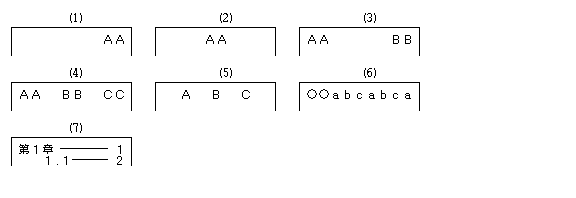
Визначає вертикальні та горизонтальні розділювальні лінії сітки (псевдографіка / лінійне оформлення).
LEN : 4 + Довжина
SUBID: 2
ATTR : UB type -- Тип сітки (UUUU KKKK)
DATA : UH count -- Кількість елементів ліній
UH lines[] -- Масив параметрів ліній
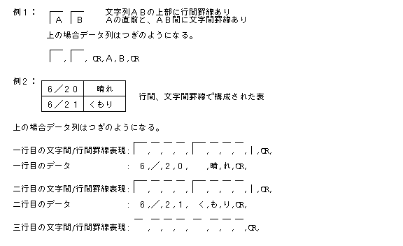
Сегмент TS_TATTR застосовується для виділення текстових блоків, гіперпосилань, виносних приміток та рубі (фонетичних підказок).
Позначає початкову та кінцеву межі виділеного текстового блоку (наприклад, для логічного групування або фонового підсвічування).
LEN : 2 SUBID: 0 -- Початок блоку (Start) ATTR : UB - -- (Зарезервовано) LEN : 2 SUBID: 1 -- Кінець блоку (End) ATTR : UB - -- (Зарезервовано)

Позначає межі текстового блоку зі спеціальним режимом виключки або вирівнювання за шириною.
LEN : 4 SUBID: 2 -- Початок блоку виключки ATTR : UB kind -- Режим виключки (0=ліворуч, 1=праворуч, 2=по центру, 3=по ширині) DATA : SCALE width -- Ширина блоку LEN : 2 SUBID: 3 -- Кінець блоку виключки ATTR : UB - -- (Зарезервовано)
Позначає початкову та кінцеву межі блоку підрядкових або надрядкових індексів (для математичних формул та хімічних рівнянь).
LEN : 6
SUBID: 4 -- Початок блоку індексу (type, pos, size)
ATTR : UB type -- Тип індексу (Fxxx xxDU)
DATA : SCALE pos -- Зсув базової лінії
RATIO size -- Масштаб шрифту індексу
LEN : 2
SUBID: 5 -- Кінець блоку індексу
ATTR : UB - -- (Зарезервовано)


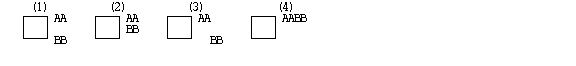
Позначає текстовий блок із надрядковим фонетичним читанням (Рубі / аннотації).
LEN : Змінна SUBID: 6 -- Початок блоку Рубі ATTR : UB attr -- Атрибути вирівнювання рубі (UUUU xxxP) DATA : UB rubi[] -- Текст фонетичної підказки LEN : 2 SUBID: 7 -- Кінець блоку Рубі ATTR : UB - -- (Зарезервовано)
Автоматично обрамляє позначений текстовий блок парними дужками або спеціальними символами виділення.
LEN : Змінна SUBID: 8 -- Початок обрамлення дужками ATTR : UB kind -- Тип дужок / обрамлення [DATA : UB ch[]] -- Символи дужок LEN : Змінна SUBID: 9 -- Кінець обрамлення дужками ATTR : UB kind -- Тип дужок [DATA : UB ch[]] -- Символи дужок
Сегмент TS_TSTYLE застосовує заздалегідь визначений іменований стиль оформлення тексту (наприклад, Заголовок 1, Заголовок 2, Основний текст, Цитата).
LEN : 2, 6 SUBID: type -- Ідентифікатор типу стилю (0..127) ATTR : UB attr -- Атрибути стилю [DATA : COLOR color] -- (Опціональний колір стилю)
| SUBID | Тип стилю | SUBID | Тип стилю |
|---|---|---|---|
| 0 | Основний текст (Normal) | 1 | Кінець основного тексту |
| 2 | Заголовок розділу 1 (Heading 1) | 3 | Кінець заголовка 1 |
| 4 | Заголовок розділу 2 (Heading 2) | 5 | Кінець заголовка 2 |
| 6 | Заголовок розділу 3 (Heading 3) | 7 | Кінець заголовка 3 |
| 8 | Виділений текст (Emphasis) | 9 | Кінець виділення |
| 10 | Код програми (Code/Literal) | 11 | Кінець коду |
| 12 | Цитата (Blockquote) | 13 | Кінець цитати |
| 14 | Виноска (Footnote) | 15 | Кінець виноски |
| 18 | Спеціальний користувацький стиль | ||
| 20〜127 | (Зарезервовано системою) | ||
| 128〜 | (Розширення додатків) | ||
Сегмент TS_TVAR динамічно підставляє системні змінні автотексту (поточна дата, час, номер сторінки, назва документа, ім'я автора тощо) в місце розташування вкладки.
LEN : 4 SUBID: 0 -- Змінна за системним ID (var_id) ATTR : UB - -- (Зарезервовано) DATA : H var_id -- Ідентифікатор зміної LEN : Змінна SUBID: 1 -- Змінна за текстовою назвою (name[]) ATTR : UB - -- (Зарезервовано) DATA : UB name[] -- Назва змінної
Зарезервовані системні ID змінних:
0 : Ім'я реального об'єкта / файла (Real Body Name)
100 : Поточна дата (РРРР-ММ-ДД)
101 : Поточний час (ГОД:ХВ:СС)
110 : Номер поточної сторінки
111 : Загальна кількість сторінок у документі
112 : Назва поточного розділу
120 : Ім'я автора документа
121 : Версія документа
Сегмент TS_TMEMO містить текстові коментарі, аннотації та нотатки рецензента, які не виводяться при друкуванні документа, але зберігаються в структурі файлу.
LEN : Змінна SUBID: 0 ATTR : UB - -- (Зарезервовано) DATA : UB memo[] -- Символьний рядок примітки
Сегмент TS_TAPPL надає можливість прикладним програмам зберігати власні специфічні структури текстових даних у форматі TAD.
LEN : Змінна
SUBID: - -- Підтип вкладки додатка
ATTR : UB - -- Атрибути
DATA : UH appl[3] -- Ідентифікатор додатка (Application ID)
UB param[] -- Параметри та дані додатка